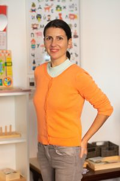
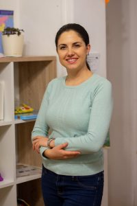

Серендипити е детски център от нов тип, предлагащ
- Полудневни и целодневни занимания за деца (2 - 6 г.) в малки групи;
- Щастливи и отговорни деца и родители;
- Алтернативни методи на преподаване и общуване (Монтесори, сугестопедия, ненасилствена комуникация, психодрама за деца, свободно образование);
- Разнообразна прогарма, включваща много арт, музика, движение;
- Наблюдение на детското развитие от педагози, логопед, психолог;
- Обогатяване програмата на децата със специални гости и посещаване на културни мероприятия извън градината;
За името
Серендипити (Serendipity) е една от най-трудно преведимите думи от английски език. Създателят ѝ Хорас Уолпол (Замъкът Отранто) я нарича на името на персийската приказка “Тримата принцове от Серендип”. Героите в историята откриват случайни неща, които им помагат по-късно. Това оформя и дефиницията на думата - да намериш нещо, което не търсиш и после да се окаже че това нещо е по-ценно от това, което си търсил.
Откриване на хубави неща, които всъщност не сме търсили активно.
История
Стартирахме официално на 11 януари 2015 г., в един прекрасен и много слънчев ден, в приятната компания на над 150 гости, нови и стари приятели. Вече редовно осъществяваме събития - нашите зали успешно се ползват за обучения, семинари, както и ставаме все по-търсени за съдействието и организирането на нетрадиционни рождени дни.
Лятото на 2016 г. се преместихме на нова и по-удобна локация - къща в центъра на София, много комуникативно, но в същото време тихо и уединено място, със собствен дух, чар и дворче.
То посрещa своите малки и по-големи обитатели от септември 2016 г. Официалното преОткриване се състоя на 2 октомври в компанията на много малки, нови и стари приятели и под неповторимото звучене на джаз музикантите Венци Благоев, Невена Григорова и др. и техният формат Джаз за деца.
Вече седма година имаме удовoлствието да работим с иновативни семейства и техните деца и да допринасяме за създаването на едни отговорни, любопитни, отворени към другите и света личности. Ние, основателите на това място, както и целият ни екип, обичаме работата си, обожаваме децата и сме в постоянно търсене на нови възможности за растеж и развитие. Надяваме се предадем нашето любопитскво и страст към живота и красивото и доброто в него, на всичките ни деца!
Христина Машкова - основател и преподавател

Хриси е основател на Серендипити и щастлива майка на три деца. Вярва, че няма невъзможни неща. Вярва в неограничените способности на жената, децата, добротата и любовта. Смята, че всяко дете е специално и уникално и се старае да види положителните му качества, да ги подкрепи и доразвие.
Филолог по образование, със специализация по комуникации от Франция и професионален опит като ПР във водещи електронни медии в България, след раждането на второто си дете Хриси прави рязък завой и се отдава на дългогодишната си мечта и призвание - да работи с деца. Започва като преподавател по френски език (в Британика и Френски институт), а членството и активното и участие в популяризирането на дейността на родителските кооперативи й отварят една нова врата към по-различно и пълноценно общуване и образование за децата.
Създава Серендипити есента на 2014 г. като пространство за общуване за малки и големи. За първата година от съществуването си Серендипити е домакин и/или организатор на редица срещи и форуми за образованието, представяне на съвременни детски книжки от български и чуждестранни автори, дискусии, беседи, концерти.
Аавгуст 2016 г. се появява новият дом на Серендипити, който представлява аристократична къща с дворче и много особен дух, в центъра на София. От тогава Серендипити се развива основно като детски център с акцент музика, английски, движение.
От есента на 2019 г., вдъхновени от Монтесори педагогиката, Серендипити се превръща в “къща на децата”, която приютява около 20 деца на възраст 2-6 години. Сугестопед, привърженик на емпатията и ненасилствената комуникация, Хриси се старае да “вижда” потенциала във всяко дете. Привърженик на ученето и развитието през целия живот, през 2019 г. Христина завършва СДК “Монтесори педагогиката в съвременното общество” съм СУ “Св. Климент Охридски”.
Розалина Пенчева - преподавател и партньор

Освен, че прилича, нежна е и красива като роза, Рози има невероятен подход с децата. Дали ще танцуват английски валс или макарена, ще броят листенцата на цветето или ще си говорят за чувствата, Рози леко и незабелижимо печели доверието на децата и плавно, но сигурно им помага да намерят себе си и техния път и призвание.
Обича да импровизира, да се води и вдъхновява от децата, да играе техните игри и да влиза според нуждата във всякакви игрови роли. Не си мислете обаче, че Рози не може да покаже бодлите си. Тя строго пази границите си, както и успява да пази и зачита тези на децата. Не сме сигурни как го прави, но освен да танцуват и да се забавляват, Рози успява да накара всички деца да подреждат и да се карат кой ще измете стаята или кухнята:).
По образование Рози е треньор по спортни танци с над 20 годишен опит, като последните седем години работи осново с деца между 2 и 5 г. Смята, че ученето продължава цял живот и постоянно усъвършенства личните си и професионални качества с редица семинари и специализирана литература. Част от тях са “Психодрама за деца” и Орф музикално възпитание.
Рози е част от Серендипити почти от създаването му, първоначално като преподавател във формата “Танцуващи с бебета”. Следващите години е преподавател в занималнята за малки дечица (2 - 5 г.). В момента Рози е основен учител и партньор в Серендипити. Успешно отговаря и подпомага административната, финансова част и бизнес - развитието на проекта.
Жана - основен учител
Усмихната, държаща на реда и правилата, внимаваща в детайла. Жани е основен учител в Серендипити от юни 2019 г. Дали ще води арт занимание, кръгче или танци на децата, Жани го прави с търпение, любов, отдаденост и зачитане нуждите на всяко дете.
Магистър логопед, Жани припознава работата с деца като нейно призвание. Комуникативна, отговорна и раздаваща се Жани е радост за всички в Серендипити!
Мира - възпитател
Мира е студент по логопедия втори курс. Винаги ентусиазирана и усмихната, Мира ежедневно се забавлява с децата и ги предизивиква с дидактични и езикови игри.
Елизабет - помощник възпитател
Елизабет е студент по педагогика първи курс. Силното й желание за работа и практически опит с хора в други сфера я доведе при нас през пролетта на 2022 г. Бети отговаря и подпомага изграждането на така важните навици на децата по време на хранене, както и самостоятелността и изграждането на хигиенни навици.Усмихната и отговорна, обича да играе и измисля игри с децата.
Учители - допълнителни дейности
Мис Ейми - учител по английски език и “нейтив спикър”
Мис Ейми е родена в Ню Йорк, но съдбата и любовта я отвежда към нашата страна. Занимаваща се с преподаване на английски език, мис Ейми предава знанията си на малки и големи вече повече от 15 години. В нейните часове можете да видите пеене, танци, много истории и вълнуващи факти с интересни материали. Децата нямат търпение за нейните часове, за да видят какво тематично им е приготвила. Така неусетно започват да говорят с цели изрази и бързо преминават към английски език.
Ейми е с нас две сутрини в седмицата с двете групи.
Албена - йога
Албена е йога инструктор близо десет години, като започва във формат “Йога за деца”.
Веселите и приятни занимания са изпълнени с движение, истории и музика. Много се радваме на Албена, тъй като надгражда себе си с различни квалификации в областта ѝ.
А способността й да организира въвлича и мотивира за йога дори двегодишни деца, винаги ни е впечатлявала!
Албена е с нас един път седмично с двете групи.
Анатоли Джоков - “Джоката” - учител по брейк танци
Джоката е любимият на децата учител по брейк танци. Със специален подход към всяко дете, забавен, различен, Джоката неусетно развива двигателната култура. Децата учат движения, докато се забавляват, преодоляват различни видове вътрешни несигурности, стават по-уверени, гъвкави, обичащи ритъма и танца.
Анатоли Джоков е сред първите, които отварят вратата на брейк танците у нас още в средата на 90-те години и до момента активно следва страстта си и въвлича в танца малки и големи. Джоката е с нас веднъж седмично с групата 3-6 години.
Жанета Димитрова - логопед
Жана работи в Серендипити като логопед. В Серендипити работим и подкрепяме широк профил деца, като сме силни привърженици на ранната диагностика.
Ето защо всяка есен Жана прави диагностика на речевото и цялостното развитие на децата. Те я обожават, защото винаги идва с голяма усмивка и няколко торби интересни играчки и материали. Мотивиран млад специалист, Жана постоянно усъвършенства уменията си, следейки последни новости и обучения в сферата.
Тя има завършена бакалавърска (2013 г.) и магистърска степен (2015 г.) по логопедия, специализирана в комуникативни нарушения на развитието към Софийски Университет „Св. Климент Охридски“. Жана е дипломант в системното семейното консултиране чрез арт терапевтични методики към Българска асоциация на арт терапевтите (БААТ).
Жана подкрепя деца от Серендипити почти от самото създаване на центъра през 2015 г.
Серендипити - къща на децата
Какво е Серендипити - къща на децата?
Всекидневна грижа за деца на възраст между 2 и 6 години с акцент английски език, арт занимания, движение, музика, съвременни методи на преподаване и общуване, Монтесори, психодрама за деца, ненасилствена комуникация. От септември 2018 г. децата са разделени на две групи - 2-3 години и 3-6 г. Максималният капацитет на малката група е 10 деца, а големите са до 15 за цял ден
Мисия
Да помогнем на децата да се чувстват спокойни и щастливи.
Да мечтаят и да вярват в мечтите си.
Да обичат и да творят.
Да са любопитни към света и знанието и да пораснат такива.
Да познават и следват себе си и нуждите си, както и да да се научат да познават и зачитат нуждите на другия и на групата.
Да могат да се концентрират.
Да могат да работят в екип, с уважение към другия.
Преподаватели
Екип от мотивирани преподаватели, избрали, припознали и практикуващи учителската професия с голяма отдаденост и много любов.
Специалисти в една или повече от следните области: сугестопедия, Монтесори, двигателна и култура на тялото, ненасилствена комуникация, психодрама за деца. Постоянно търсещи и самоусъвършенстващи се личности.
Форми на посещение
Полудневна: 8:30 - 12:30 ч. (до 13:00 при включен обяд)
Целодневна: 8:30 - 18:30 ч.
Къде се намираме?
Център - ул. Шандор Петьофи и Люлин планина - много комуникативно, в същото време тихо и спокойно място. В къща със собствено дворче.
Работно време:
8:30 - 18:30 ч.
Прием
Целогодишен - след събеседване и пробен период и при наличие на свободни места.
Цени
Целодневна форма (2 - 3 годишни): 1080 лв.
Целодневна форма (3 - 6 годишни): 1020 лв.
Полудневна форма (2 - 3 годишни): 880 лв.
Полудневна форма (3 - 6 годишни): 820 лв.
При целодневна форма в цената се включва:
- сутрешна плодова закуска, обяд (салата, първо, второ), следобедна закуска
- Ежедневни занимания: Монтесори, двигателни, музикални, арт занимания и всички материали за тях (ежедневно)
- изучаване на английски език с нейтив спийкър (два пъти седмично)
- игри за емоционална интелигентност, водени от психодрама специалист за деца над 4 години (един път седмично)
- народни танци (веднъж седмично)
- йога (веднъж седмично)
- работа с учебници по програма на МОН за деца над 3 години
Допълнителни занимания (незадължителни)
- екскурзия или посещение на културно мероприятие - според офертата
Дневен режим и програма
8:30 - 9:50 - Посрещане и свободни игри, подготовка за сутрешно кръгче
10:00 - 10:30 - Сутрешно кръгче - опознаване, разказване, споделяне и планиране на предстоящия ден и дейности. Раздвижване и подготовка на тялото и ума за деня.
10:30 - 11:00 - Плодова закуска (сервиране, отсервиране, участие в приготвянето)
11:00 - 11:30 - Тематично занимание на открито или закрито - арт, английски език, йога, музика
11:40 - 12:30 - Игри на открито (през всички сезони)
12:30 - 13:30 - Подготовка за обяд и обяд
13:30 - 15:45 - Почивка, четене на книжка, релаксация-
16:00 - 16:30 - Следобедна закуска
16:30 - 17:30 - Тематични занимания
17:30 - 18:00 - Свободни игри (танци, йога, рисуване)
За допълнителна информация моля, изпратете запитванe на serendipity.insofia@gmail.com
За учебната 2023/2024 г. има свободни места